Project guide:
Dr. A. Sathyabhama, Head of Wind Tunnel Lab, Department of Mechanical Engineering, NITK Surathkal.
Team Members:
- Darren Fernandes
- Kartik Nayak
- Vehan Doshi
Acknowledgment
We express our immense gratitude to Professor A. Sathyabhama, for her valuable insight, and under whose supervision this project was completed. We are also grateful to Mr. Jayapal Reddy (PhD scholar) for his guidance during the experiments and Aakruthi 3D Pvt. Ltd for supplying us with 3D printed parts.
Introduction
Several studies on wind energy have been conducted to find possible solutions to power issues related to the variable nature of wind. One of the most promising solutions seems to be the application of sinusoidal modifications, or tubercles on the leading edge of wind turbine blades. The idea of tubercles was discovered by Fish and Battle [2]. They realized that the ability of humpback whales to perform incredible turnings in the air is due to the presence of leading-edge sinusoidal modifications on their flippers. They generate counter-rotating vortices adding momentum exchange in the boundary layer and delaying flow separation. These phenomena can be used to our advantage in small scale wind turbines, which will allow delayed flow separation and increased power production at higher wind speeds. In simpler words, a wind turbine with leading-edge tubercles can generate higher power at higher speeds and also widen the range of airspeed for which it extracts usable power.
Aim
This project aimed to design wind turbine blades with leading-edge tubercles and test them experimentally using a wind tunnel to verify the claim in the literature. To achieve this, the project was segmented into smaller goals. Design of a wind turbine and blades (baseline and tubercled) for low wind speed operations (3m/s to 8m/s), wind tunnel testing to get Power V/s Wind Speed curve, CFD analysis of the blade tips as an extended study.
Design of the blades
The blades were designed based on the Blade Element Momentum (BEM) theory for a Horizontal Axis Wind Turbine (HAWT). E216 airfoil was chosen due to its excellent properties for low-speed applications. The blade span chosen for our study was 0.15m. The optimum span-wise variations in chord and twist angle were obtained using the BEM equations taking the number of blades as 3 with a Tip Speed Ratio (TSR) as 4.189. A conical hub was designed to withstand the centrifugal forces and the blades were installed onto it using dovetail joints.
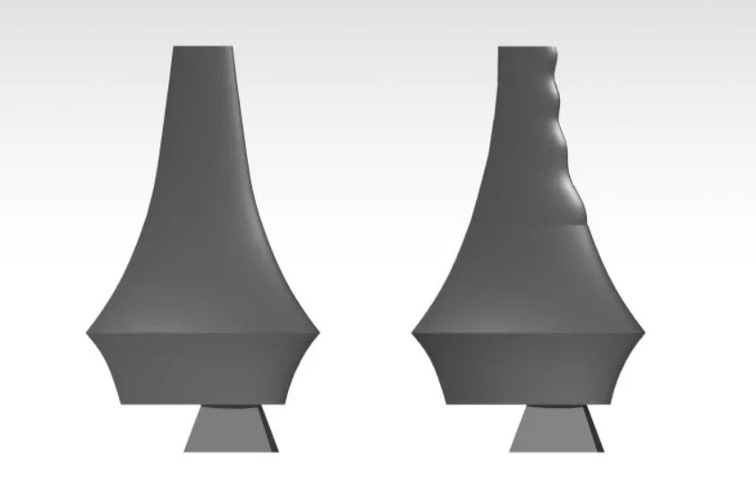
Fig 1. CAD models of Baseline blade (left) and Tubercled blade (right)
For the tubercled blades, the tubercle wavelength and amplitude, which are percentages of the chord length, were chosen based on detailed studies from the existing literature. Due to easier manufacturing and 3D modelling, only 1/3rd of each blade from the tip was tubercled. A literature survey [1] showed that the effect of tubercles was less near the roots. The CAD models of the blades were modelled on CATIA and SOLIDWORKS and are shown in Fig 1.
Experimental Setup
The blades and hub were made of Poly Lactic Acid (PLA) and manufactured using the 3D printing technique with 50% in-fill and a layer resolution of 200 microns. A 36W generator was chosen and assembled using hose clamps and a foam sheet for dampening the vibrations. The aluminium wind turbine tower was manufactured using aluminium welding. The system was set up inside the 1000mm * 1000mm * 2000mm test section at the suction type subsonic wind tunnel facility at NITK.
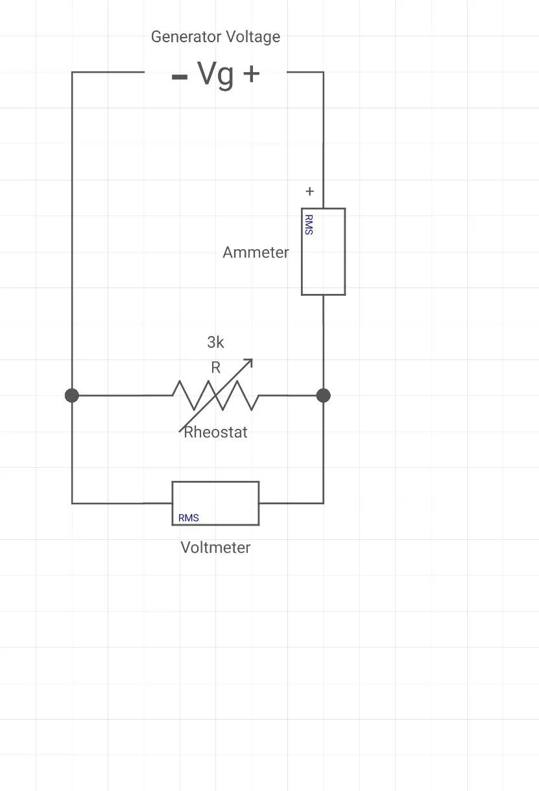
Fig 2. Circuit diagram of the turbine power recovery system
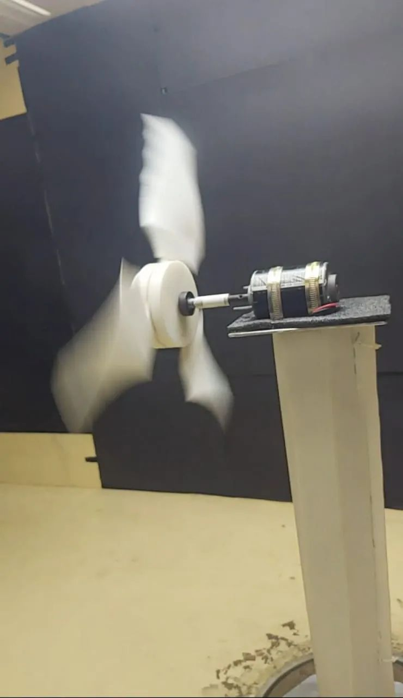
Fig 3. A still from the testing of the tubercled turbine
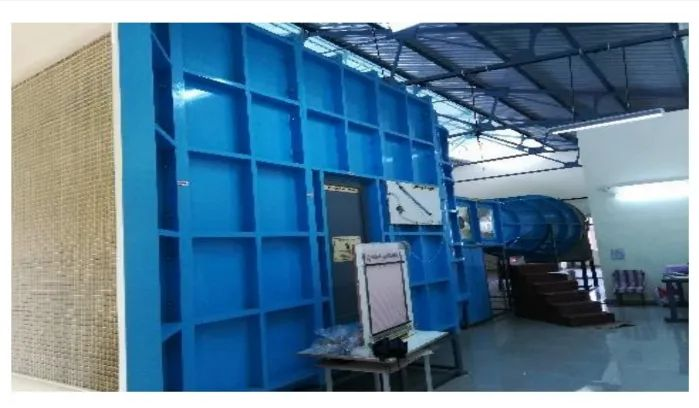
Fig 4. Subsonic wind tunnel facility at NITK Surathkal
Results
Due to the ongoing Covid-19 pandemic and the lockdown, our experimental study was limited to the testing of the baseline blades and the blades with tubercles starting with a crest. The following graph shows the variation in the Power output of the tubercled and baseline turbine with increasing wind speed.
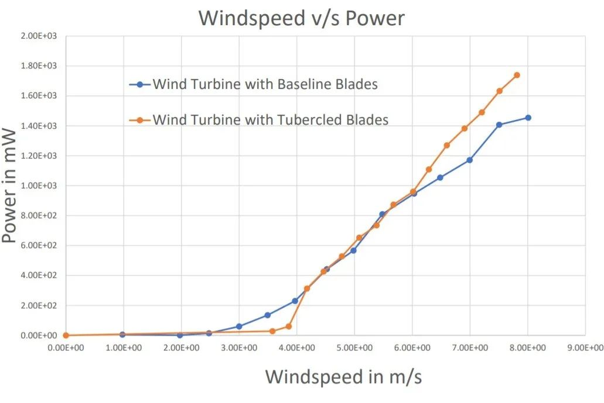
Fig 5. Variation in the power output of the turbine with wind speed
From the above graph (Fig 5.), it can be observed that the baseline turbine has a cut-in wind speed of approximately 2.5m/s. In the case of the tubercled turbine, the cut-in wind speed is approximately 3.5m/s. Both the turbines have about the same power output up to a wind speed of 6m/s. Post 6m/s, the tubercled turbine continues along the same slope and shows a superior power output than the baseline turbine reaching an improvement of about 19.8% relative to the baseline turbine at 7.8m/s wind speed. This result supports the existence of flow separation from the baseline blades after 6m/s, but the absence of the same in the case of the tubercled blades.
The angle of attack (α) of the blades increases with the wind speed. As an extended study, the variation in the performance of the blade tips with the angle of attack was investigated using CFD. ANSYS Fluent was the chosen platform for the study, and the solution was based on the Spalart Allmaras model at a Reynolds number of 13000. Due to limited computational resources, the study was restricted to four angles of attack. Following the airfoil analysis of E216 on XFLR5 software, the angles of attack that were chosen for our study were α=0°, α=6°, α=10°, and α=16°. The results of the study at 5m/s steady flow conditions are as follows in Tables 1, 2 and 3.
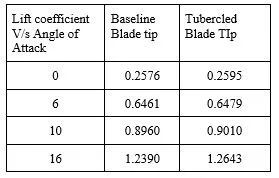
Table 1. Variation of Lift Coefficient (Cl) with α
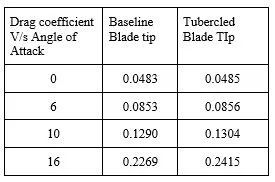
Table 2. Variation of Drag Coefficient (Cd) with α
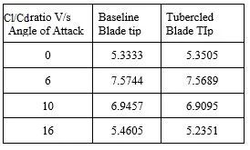
Table 3. Variation of Cl/Cd ratio with α
From Tables 1, 2 and 3, we can observe that the Lift and Drag co-efficients of both the blades are similar at α=0°, α=6°, α=10° but have a significant rise at α=16°. Between α=10° and α=16°, a significant change in deviation from 0.73% to 2.04%, 1.08% to 6.43%, 0.52% to 4.12% between the two designs in the Lift co-efficient, Drag co-efficient and L/D ratio respectively can be observed.
The following images (Fig 6. and Fig 7.) are of the CAD models of the blade tip used for CFD analysis and flow visualization. These are followed by the images of the vortex core regions (Fig 8. And Fig 9.) and the velocity streamlines (Fig 10. to Fig 17).
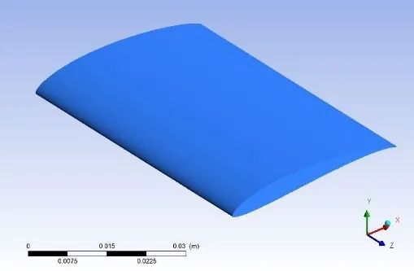
Fig 6. CAD Model of the baseline blade tip
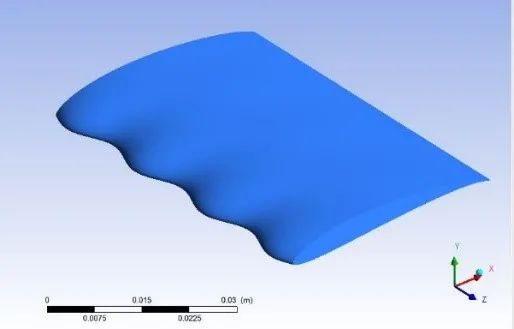
Fig 7. CAD Model of the tubercled blade tip
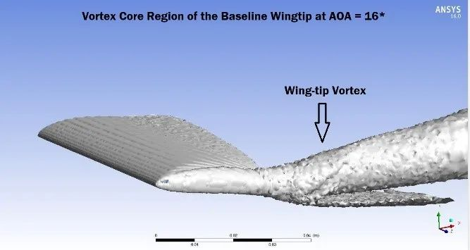
Fig 8. Vortex core region of the baseline blade-tip at α=16°
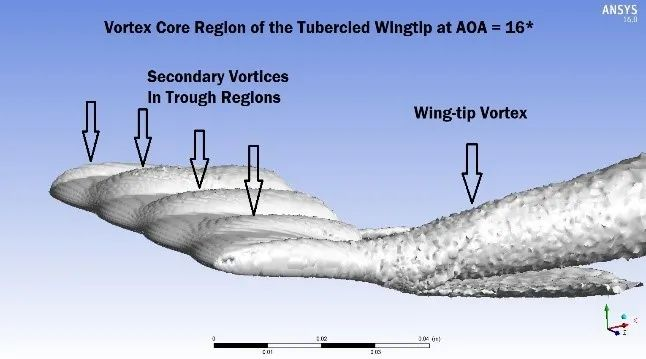
Fig 9. Vortex core region of the tubercled blade-tip at α=16°
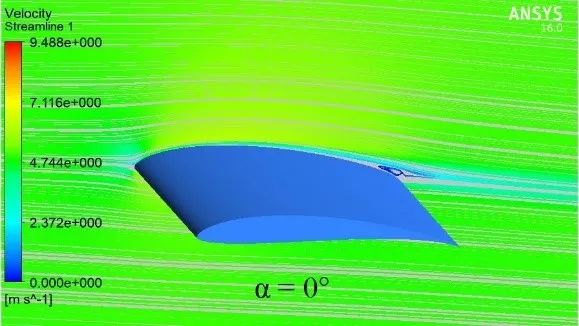
Fig 10. Velocity Streamlines of the baseline blade tip at α=0°
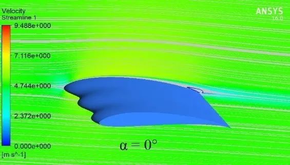
Fig 11. Velocity Streamlines of the tubercled blade tip at α=0°
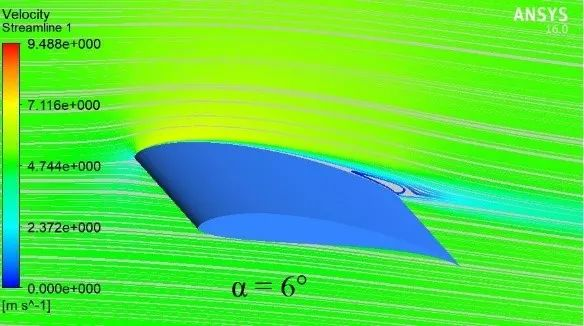
Fig 12. Velocity Streamlines of the baseline blade tip at α=6°
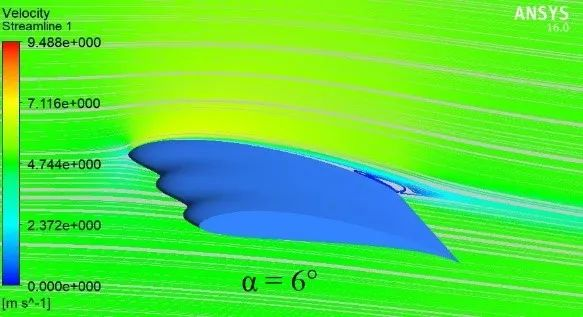
Fig 13. Velocity Streamlines of the tubercled blade tip at α=6°
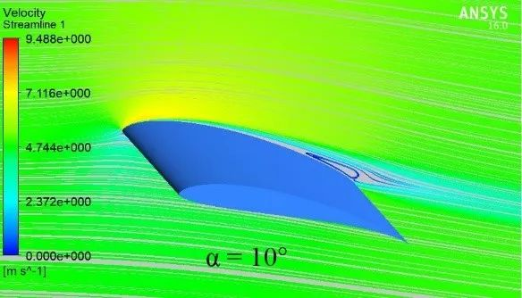
Fig 14. Velocity Streamlines of the baseline blade tip at α=10°
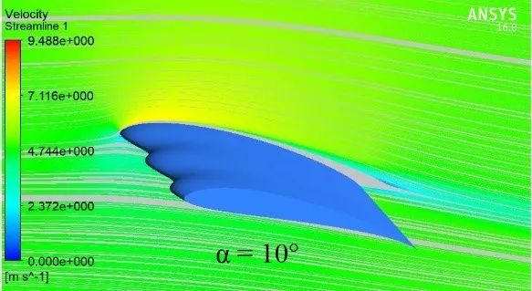
Fig 15. Velocity Streamlines of the tubercled blade tip at α=10°
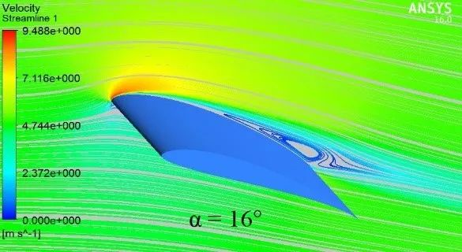
Fig 16. Velocity Streamlines of the baseline blade tip at α=16°
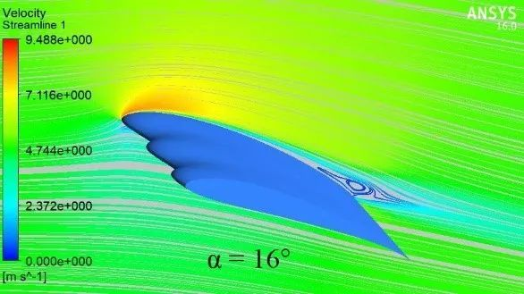
Fig 17. Velocity Streamlines of the tubercled blade tip at α=16°
The vortex core regions for both the designs were generated at α=16° (Fig 8. and Fig 9.). The presence of secondary vortices in the trough region is clearly visible (Fig 9.). The significant change in the aerodynamic characteristics which is observed in Tables 1,2 and 3, at α=16° is reflected in the velocity streamlines which is plotted for both the designs at various values of α (Fig 10. to Fig 17).
Click to play
Conclusions
It can be concluded that at lower angles of α (low wind speeds in case of the turbine), the flow characteristics of the baseline blades and the tubercled blades is almost identical. However, in the post-stall regime, this study has confirmed the presence of secondary vortices, which delay the flow separation in tubercled blades, resulting in its superior aerodynamic performance as compared to the baseline blades.
Future Scope
The change in the aerodynamic performance of the blades due to the phase shift of the tubercles can be explored along a similar path, as covered above. Due to the Covid-19 pandemic and enforced lockdown, the testing of blades with tips starting with a trough was not performed. For verifying the experimental results, CFD analysis of the full blades can also be performed.
References
[1] Abate, G., Mavris, D. N., & Sankar, L. N. (2019). Performance Effects of Leading Edge Tubercles on the NREL Phase VI Wind Turbine Blade. Journal of Energy Resources Technology, 141(5). Link
[2] Fish, F. E., & Battle, J. M. (1995). Hydrodynamic design of the humpback whale flipper. Journal of Morphology, 225(1), 51–60. Link
[3] Bai, C.-J., Wang, W.-C., & Chen, P.-W. (2016). The effects of sinusoidal leading edge of turbine blades on the power coefficient of horizontal-axis wind turbine (HAWT). International Journal of Green Energy, 13(12), 1193–1200. Link
[4] Schubel, P. J., & Crossley, R. J. (2012). Wind Turbine Blade Design. Energies, 5(9), 3425–3449. Link
[5] Wei, Z., Lian, L., & Zhong, Y. (2018). Enhancing the hydrodynamic performance of a tapered swept-back wing through leading-edge tubercles. Experiments in Fluids, 59(6). Link
[6] Bolzon, M. D., Kelso, R. M., & Arjomandi, M. (2017). Performance effects of a single tubercle terminating at a swept wing’s tip. Experimental Thermal and Fluid Science, 85, 52–68. Link